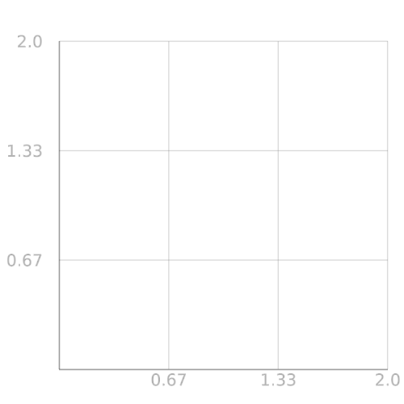
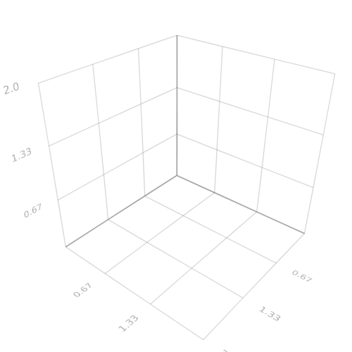
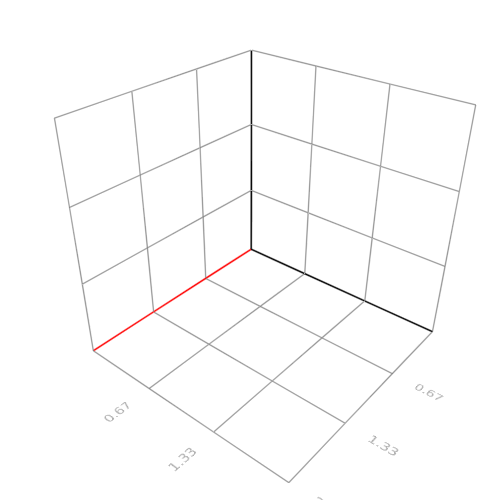

Axis
The axis is just a scene object, making it easy to manipulate and share between plots. Axis objects also contains the mapping you want to apply to the data and can interactively be changed. An Axis object can be created from any boundingbox and inserted into any plot.
MakiE.axis — Function.Creates an axis visualization for a certain bounding box.
Attributes:
Attribute axisnames, convert function to_text which accepts:
All text____________________
Attribute visible, convert function to_bool which accepts:
To boolean
Accepts Tuple of Bool____________________
Attribute showticks, convert function to_bool which accepts:
To boolean
Accepts Tuple of Bool____________________
Attribute tickfont2d, convert function to_font which accepts:
All fonts____________________
Attribute tickfont3d, convert function to_font which accepts:
All fonts____________________
Attribute showaxis, convert function to_bool which accepts:
To boolean
Accepts Tuple of Bool____________________
Attribute showgrid, convert function to_bool which accepts:
To boolean
Accepts Tuple of Bool____________________
Attribute scalefuncs, convert function to_scalefunc which accepts:
`Function`____________________
Attribute gridcolors, convert function to_color which accepts:
`Colors.Colorants`
A `Symbol` naming a color, e.g. `:black`
A `String` naming a color, e.g. `:black` or html style `#rrggbb`
A Tuple or Array with elements that `to_color` accepts. If Array is a Matrix it will get interpreted as an Image
Tuple{<: ColorLike, <: AbstractFloat} for a transparent color____________________
Attribute gridthickness, convert function to_3floats which accepts:
No documentation found.
`MakiE.to_3floats` is a `Function`.
```
# 2 methods for generic function "to_3floats":
to_3floats(b, x::Tuple) in MakiE at /home/s/.julia/v0.6/MakiE/src/plotsbase/axis.jl:10
to_3floats(b, x::Number) in MakiE at /home/s/.julia/v0.6/MakiE/src/plotsbase/axis.jl:11
```____________________
Attribute axiscolors, convert function to_color which accepts:
`Colors.Colorants`
A `Symbol` naming a color, e.g. `:black`
A `String` naming a color, e.g. `:black` or html style `#rrggbb`
A Tuple or Array with elements that `to_color` accepts. If Array is a Matrix it will get interpreted as an Image
Tuple{<: ColorLike, <: AbstractFloat} for a transparent color____________________
using MakiE
scene = Scene(resolution = (500, 500))
aviz = axis(linspace(0, 2, 4), linspace(0, 2, 4))
center!(scene)
using MakiE
scene = Scene(resolution = (500, 500))
aviz = axis(linspace(0, 2, 4), linspace(0, 2, 4), linspace(0, 2, 4))
center!(scene)
Interaction
One can quite easily interact with the attributes of the axis like with any other plot:
# always tuples of xyz for most attributes that are applied to each axis
aviz[:gridcolors] = (:gray, :gray, :gray)
aviz[:axiscolors] = (:red, :black, :black)
aviz[:showticks] = (true, true, false)